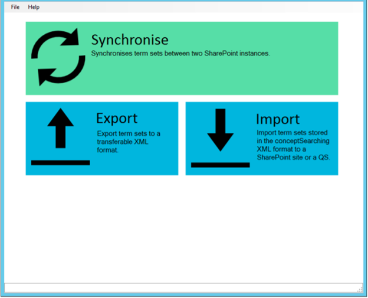
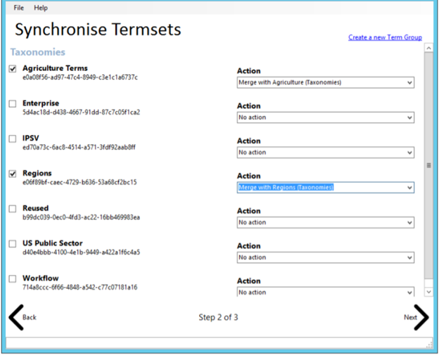
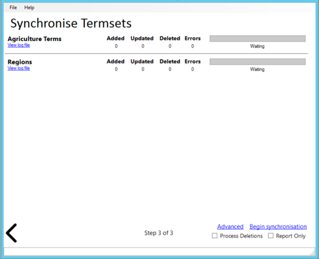

Synchronize term set structures between two SharePoint instances via the
conceptTermStoreManager using the steps listed in this article
- Navigate to C:\inetpub\wwwroot\conceptQS\bin\conceptTermStoreManager.exe
-
Run the conceptTermStoreManager.exe and observe the following screen
- 
- Click the Synchronise box
- Enter the Source SharePoint farm and Destination SharePoint farm URLs
- Provide credentials that have access to the Term Store
- Click Next
- Check the boxes for each desired term set
-
Use the drop down box to select an action
- 
- In this example, the Regions term set will be merged into the existing term sets in the Taxonomies term group
- Click Next
-
Review the summary on the final page
- 
- If you wish to ensure terms not found in the source are removed from the destination (Matching GUID), check the Process Deletions box
- If you wish to prevent any changes from occurring in the destination, check the Report Only box
- Any changes that would have been made to term sets will be logged to the individual term sets logs, which are visible by clicking the View Log File link.
- Optional advanced options can be found by clicking the Advanced button.
- Click Begin Synchronisation